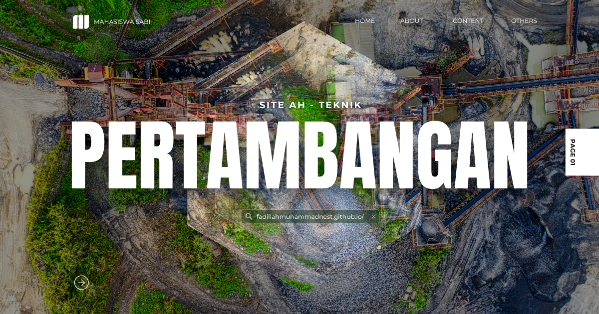

Energi Terbarukan
Energi Terbarukan: Mendukung Transformasi Pertambangan Menuju Masa Depan yang Berkelanjutan
Industri pertambangan sedang mengalami transformasi besar seiring meningkatnya kebutuhan akan efisiensi energi, pengurangan emisi karbon, dan penerapan prinsip pembangunan berkelanjutan. Perusahaan tambang tidak lagi hanya berfokus pada produksi mineral, tetapi juga mulai mengintegrasikan sumber energi bersih untuk mendukung operasional yang lebih ramah lingkungan. Oleh karena itu, dalam major studi Teknik Pertambangan, mata kuliah Energi Terbarukan membekali mahasiswa dengan pemahaman mengenai berbagai teknologi energi bersih, pemanfaatannya dalam industri pertambangan, serta perannya dalam mendukung transisi menuju sistem energi yang lebih efisien, rendah emisi, dan berkelanjutan.
Mata kuliah ini mengintegrasikan ilmu teknik pertambangan, teknik energi, teknik elektro, lingkungan, ekonomi energi, dan kebijakan pembangunan berkelanjutan. Mahasiswa mempelajari karakteristik berbagai sumber energi terbarukan, potensi penerapannya di kawasan pertambangan, analisis kelayakan, serta strategi integrasi energi bersih dalam operasi tambang modern.
Apa Itu Energi Terbarukan?
Energi Terbarukan merupakan mata kuliah yang mempelajari sumber energi yang dapat diperbarui secara alami, seperti energi surya, angin, air, panas bumi, biomassa, dan energi laut, beserta teknologi konversi, penyimpanan, distribusi, serta penerapannya dalam berbagai sektor, termasuk industri pertambangan. Mata kuliah ini juga membahas bagaimana energi terbarukan dapat mendukung pengurangan ketergantungan terhadap bahan bakar fosil dan meningkatkan efisiensi energi dalam kegiatan pertambangan.
Dalam Teknik Pertambangan, energi terbarukan menjadi bidang yang semakin penting karena banyak perusahaan tambang mulai memanfaatkan pembangkit listrik tenaga surya, sistem hibrida, penyimpanan energi, hingga elektrifikasi alat berat untuk mengurangi biaya operasional sekaligus mencapai target keberlanjutan.
Fokus yang Dipelajari dalam Energi Terbarukan
Materi yang dipelajari mencakup berbagai teknologi, analisis, dan penerapan energi bersih dalam sektor pertambangan, antara lain:
- Konsep dasar energi terbarukan dan transisi energi global.
- Teknologi energi surya serta sistem pembangkit listrik tenaga surya (PLTS).
- Energi angin dan pemanfaatannya untuk kebutuhan operasional tambang.
- Energi air, panas bumi, biomassa, dan bioenergi.
- Sistem penyimpanan energi (Energy Storage System) menggunakan baterai dan teknologi lainnya.
- Sistem energi hibrida yang mengombinasikan energi terbarukan dengan pembangkit konvensional.
- Efisiensi energi pada fasilitas dan peralatan pertambangan.
- Analisis ekonomi proyek energi terbarukan dan kelayakan investasi.
- Pengurangan emisi karbon melalui pemanfaatan energi bersih.
- Kebijakan energi, dekarbonisasi, dan pembangunan berkelanjutan dalam industri pertambangan.
Peran Energi Terbarukan dalam Teknik Pertambangan
Mata kuliah ini memiliki peran yang semakin penting karena industri pertambangan menghadapi tuntutan untuk meningkatkan efisiensi energi, menekan emisi gas rumah kaca, serta menerapkan praktik pertambangan berkelanjutan. Pemanfaatan energi terbarukan menjadi salah satu strategi utama dalam mencapai tujuan tersebut.
- Mendukung dekarbonisasi industri: membantu mengurangi emisi karbon dari kegiatan pertambangan.
- Meningkatkan efisiensi energi: mengoptimalkan penggunaan energi melalui teknologi yang lebih hemat dan bersih.
- Mengurangi biaya operasional: memanfaatkan sumber energi lokal untuk mengurangi ketergantungan terhadap bahan bakar fosil.
- Mendukung keberlanjutan: meningkatkan kinerja lingkungan perusahaan pertambangan.
- Mendorong inovasi: membuka peluang pengembangan teknologi energi baru dalam sektor pertambangan.
Kegunaan dalam Masyarakat, Riset, dan Dunia Kerja
Kompetensi Energi Terbarukan memberikan manfaat yang luas dalam pengembangan industri, penelitian, serta pembangunan ekonomi rendah karbon.
- Masyarakat: mendukung penyediaan energi yang lebih bersih, mengurangi pencemaran, dan meningkatkan ketahanan energi.
- Riset: digunakan dalam penelitian sistem energi terbarukan, penyimpanan energi, elektrifikasi tambang, efisiensi energi, dan teknologi rendah karbon.
- Industri: membantu perusahaan mengembangkan strategi transisi energi, meningkatkan efisiensi operasional, dan memenuhi target keberlanjutan.
- Pemerintah: mendukung implementasi kebijakan transisi energi, pengurangan emisi, dan pembangunan ekonomi hijau.
- Dunia kerja: kompetensi ini dibutuhkan oleh Mining Engineer, Energy Engineer, Sustainability Officer, Environmental Engineer, Renewable Energy Consultant, Energy Analyst, maupun manajer proyek energi.
Penerapan Energi Terbarukan dalam Industri Pertambangan
Dalam praktiknya, berbagai perusahaan pertambangan telah memanfaatkan pembangkit listrik tenaga surya, turbin angin, pembangkit listrik tenaga air skala kecil, hingga sistem pembangkit hibrida untuk memenuhi kebutuhan energi di lokasi tambang yang jauh dari jaringan listrik utama. Teknologi penyimpanan energi juga digunakan untuk menjaga kestabilan pasokan listrik dan meningkatkan efisiensi operasional.
Selain penyediaan energi, penerapan energi terbarukan juga mencakup elektrifikasi alat berat, pembangunan stasiun pengisian kendaraan listrik, optimalisasi konsumsi energi melalui sistem manajemen energi, serta pemanfaatan energi bersih pada fasilitas pengolahan mineral dan infrastruktur tambang.
Tren Terkini Energi Terbarukan
Perkembangan teknologi energi bersih berlangsung sangat pesat dan semakin banyak diterapkan dalam industri pertambangan modern. Transformasi digital, elektrifikasi, dan teknologi penyimpanan energi menjadi pendorong utama menuju operasi tambang yang lebih efisien dan berkelanjutan.
- Net Zero Emission Mining: strategi pengurangan emisi karbon menuju operasi tambang dengan emisi nol bersih.
- Solar Hybrid Power Plant: integrasi pembangkit listrik tenaga surya dengan generator diesel atau sistem penyimpanan energi.
- Battery Energy Storage System (BESS): penggunaan baterai berkapasitas besar untuk meningkatkan keandalan pasokan energi.
- Electrification of Mining Equipment: penggunaan alat berat listrik untuk mengurangi konsumsi bahan bakar dan emisi.
- Hydrogen Energy: pengembangan hidrogen hijau sebagai sumber energi alternatif bagi kendaraan dan peralatan tambang.
- Smart Energy Management System: pemanfaatan Internet of Things (IoT), sensor, dan kecerdasan buatan untuk mengoptimalkan penggunaan energi secara real-time.
- Carbon Capture, Utilization, and Storage (CCUS): teknologi penangkapan dan pemanfaatan karbon sebagai bagian dari strategi dekarbonisasi industri.
- Artificial Intelligence (AI) for Energy Optimization: penggunaan AI untuk memprediksi kebutuhan energi, mengoptimalkan operasi pembangkit, dan meningkatkan efisiensi sistem energi tambang.
Perkembangan tersebut menunjukkan bahwa Energi Terbarukan tidak lagi menjadi pelengkap dalam industri pertambangan, melainkan telah menjadi bagian strategis dalam meningkatkan efisiensi operasional, menekan emisi karbon, memperkuat ketahanan energi, dan mendukung transformasi menuju pertambangan yang berkelanjutan.
Penutup: Fondasi Transisi Energi dalam Industri Pertambangan
Energi Terbarukan merupakan mata kuliah yang semakin penting dalam Teknik Pertambangan karena membangun kemampuan mahasiswa dalam memahami teknologi energi bersih, penerapannya pada operasi tambang, serta kontribusinya terhadap efisiensi energi dan keberlanjutan industri. Kompetensi ini menjadi bekal penting untuk menghadapi transformasi sektor pertambangan yang semakin berorientasi pada ekonomi rendah karbon.
Dengan menguasai teknologi energi terbarukan, sistem penyimpanan energi, analisis kelayakan, serta mengikuti perkembangan Net Zero Emission Mining, Solar Hybrid Power Plant, Battery Energy Storage System, Electrification of Mining Equipment, Hydrogen Energy, Smart Energy Management System, Carbon Capture, Utilization, and Storage, serta Artificial Intelligence for Energy Optimization, lulusan Teknik Pertambangan akan memiliki kompetensi yang sangat dibutuhkan untuk mendukung industri pertambangan yang modern, efisien, tangguh, dan berkelanjutan.
Mahasiswa Sabi
©Repository Muhammad Surya Putra Fadillah